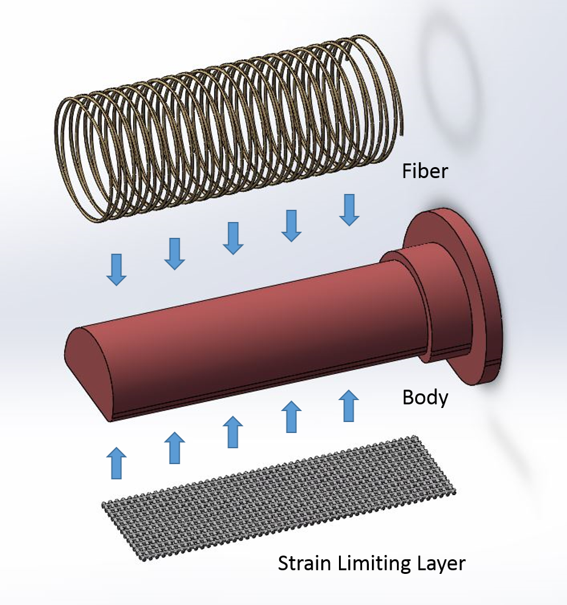
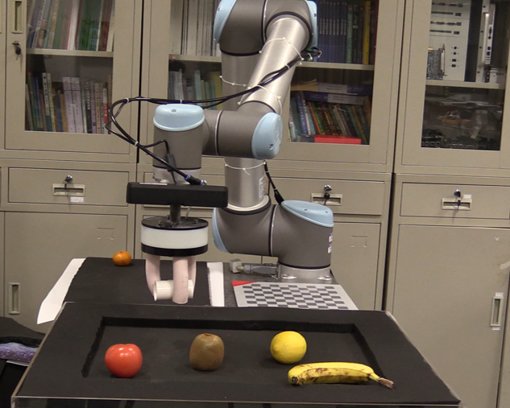

Research
Advisor: Prof. Guoying Gu [Google Scholar]
Soft Pneumatic Actuators
Pneu-net Actuator with Coupled Bending and Twisting Motions
This work presents a programmable design to enable pneu-net actuators to achieve such complex motions. This achievement is mainly owing to tuning a structure parameter, the chamber angle. Through finite element analysis and experimental verification, variation trends of bending and twisting motions with respect to the chamber angle are investigated. Additionally, deformation characteristics of actuators are demonstrated by depicting configurations of actuators and some grasping tests. By adjusting the chamber angle, the motion of pneu-net actuators is explored into 3-D space and becomes more sophisticated and dexterous.


Robotic Grippers
Soft Pneumatic Robotic Gripper Based on Fiber-reinforced Actuators
This work tries to design a soft pneumatic robotic gripper which is easy to be controlled and has strong adaptive ability. This gripper achieves grasping tasks through cooperation of three fiber-reinforced soft bending actuators. It can accomplish the no-damage grasping of fragile items because of the compressibility of gas and the elasticity of soft actuators. This robotic gripper shows great ability to grasp kinds of object with different size when cooperates with UR robot arm.
 